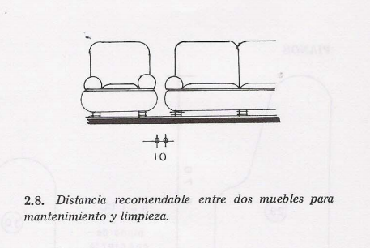

Medidas en una Sala
Distancia entre sillones
Para una sala siempre tenemos que tener en cuenta las dimensiones máximas en las que pasarán
los húespedes, así pues empezamos por la distancia entre un sillón y otror, el cuál no debe
exceder el metro con cuarenta centímetros (1.4m).

Distancia entre sillón y pared para pasillo
Ahora bien, la distancia que deberemos dejar entre un sillón y la pared en la que queremos que haya un pasillo o especialmente
que sea un área más transitada que permite un acceso a la sala y pase de largo a otro espacio, por ejemplo la cocina tendremos que
tener una medida entre 90cm a 105 cm.

Distancia entre un muro y el respaldo de un sillón I
La distancia que existirá entre 1 sillón y la pared de manera que pase 1 persona de manera dinámica y otra persona de manera
estática deberá ser mayor que el mínimo de las medidas mínimas anteriores, es decir 1 metro. Esta distancia puede ser ampliable 10 centímetros,
eso ya es criterio del arquitecto.
Distancia entre un muro y el respaldo de un sillón II
Esto podrá ser un poco confuso, sin embargo no perdamos el norte, empezemos porque esta es la medida mínima para que pase una persona entre un muro
y un sillón, a secas eso significa, eso si, si se requiere usar el espacio para acceso será entonces únicamente de 90 cm con su ampliación que ya vimos anteriormente.
Distancia entre sillón para limpieza
Es muy simple, solamente dejaremos 10 cm entre sillón para la hora de limpiar, también dejaremos esa distancia entre sillón y otros muebles ya sea una mesita de sala
o un trinchador.

Más información sobre muebles
Si quieres tener más información sobre los tamaños de los muebles de una sala te invitamos a que puedas acceder al siguiente link:
Medidas de los muebles de una Sala.
Si quieres tener más información sobre los tamaños de los muebles de una cocina te invitamos a que puedas acceder al siguiente link:
Medidas de los muebles de una Cocina.